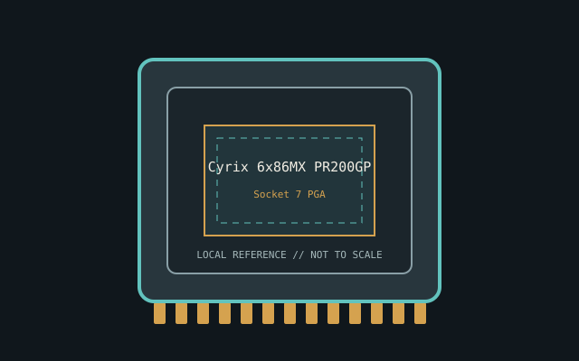

[ INDIVIDUAL CPU COMPONENT ]
Cyrix 6x86MX PR200GP
M2/6x86MX x86; PR200 grade, 66.7 MHz bus, 2.5x clock (166.7 MHz), 64 KB on-chip cache; 2.9 V nominal Model-specific record; confirm the complete part marking before installation.

IDENTIFICATION: Cyrix 6x86MX PR200GP. Product name alone does not establish package, stepping, voltage or firmware compatibility.
Verified model specifications
| Catalog path | Other → Cyrix and IDT processors |
|---|---|
| Model and compute | M2/6x86MX x86; PR200 grade, 66.7 MHz bus, 2.5x clock (166.7 MHz), 64 KB on-chip cache; 2.9 V nominal |
| Package / socket | Socket 7 PGA |
| Compatibility | Board must support Cyrix voltage ID, bus and BIOS settings |
| Stepping and variants | PR rating isn't MHz; GP/GX and stepping/supply variants |
Compatibility and service
- Board must support Cyrix voltage ID, bus and BIOS settings
- PR rating isn't MHz; GP/GX and stepping/supply variants
- Read marking/voltage; don't set clock from PR rating
- Confirm board manual, exact CPU support list, firmware, voltage/power, memory and cooling before use; never force a package.
Service & archival notes
Read marking/voltage; don't set clock from PR rating
Photograph package, markings, contacts and date/lot codes before repair. Log host board, BIOS/microcode, memory, cooler, condition, provenance and source revision.
Sources & further reading
- Cyrix/IDT datasheet archiveHistorical datasheets; match complete marking.
- Independent CPU referenceCross-reference; manufacturer documentation takes precedence.
Manufacturer documents take precedence. Family-level references may not resolve every stepping; verify the marking and motherboard CPU list.